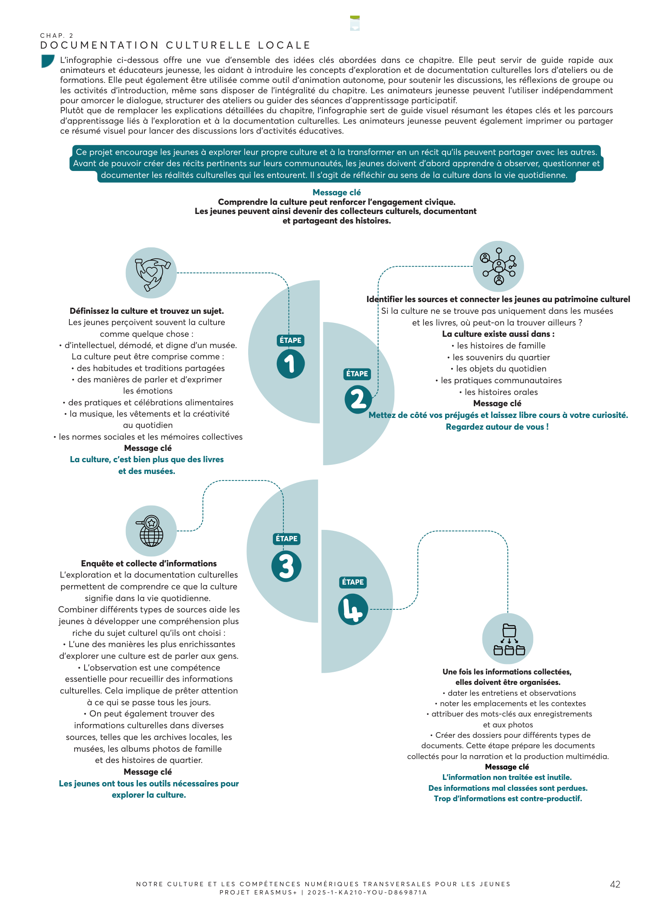
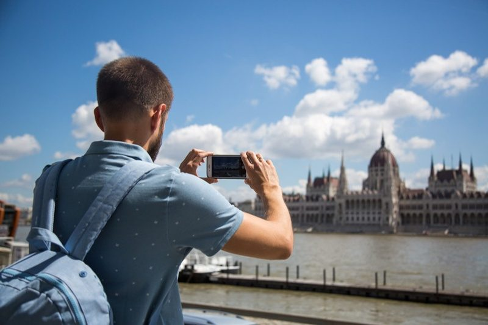
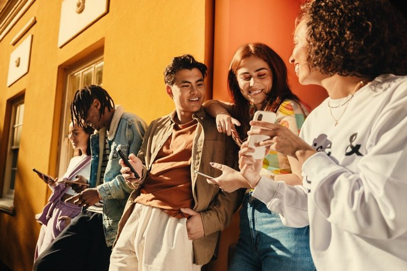
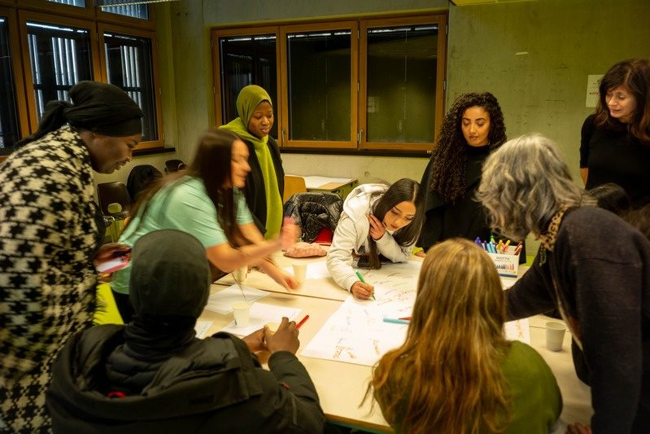

R É S U M É I N F O G R A P H I Q U E

Résumé visuel du chapitre : cliquez pour agrandir ou télécharger.
Télécharger l’infographie (PDF)Introduction

Après avoir développé des compétences essentielles en matière de culture numérique et médiatique au chapitre 1, l’étape suivante consiste à explorer les environnements culturels dans lesquels vivent les jeunes. Avant de pouvoir créer des récits pertinents sur leurs communautés, les jeunes doivent d’abord apprendre à observer, à questionner et à documenter les réalités culturelles qui les entourent.
Ce chapitre est donc consacré à l’exploration et à la documentation culturelles. Il fournit aux animateurs jeunesse des outils pratiques pour aider les jeunes à :
- comprendre ce que la culture signifie dans la vie quotidienne ;
- identifier les sujets culturels qui méritent d’être explorés ;
- recueillir des informations culturelles fiables provenant de différentes sources ;
- apprendre les méthodes d’enquête de base inspirées de l’ethnographie et de l’histoire orale.
Ces activités encouragent la curiosité, l’observation et le dialogue avec les communautés locales. Grâce à ces démarches, les jeunes deviennent des explorateurs actifs de leur propre environnement culturel.
DigComp 3.0 : lien avec le chapitre
Ce chapitre contribue principalement au domaine « Recherche, évaluation et gestion de l’information », en aidant les jeunes à collecter, évaluer et organiser des informations culturelles issues de différentes sources.

Objectifs d’apprentissage
À la fin de ce chapitre, les animateurs jeunesse seront capables de :
- aider les jeunes à réfléchir au sens de la culture dans la vie quotidienne ;
- guider les jeunes participants dans l’identification des thèmes culturels à explorer ;
- aider les jeunes à identifier différents types de sources ;
- faciliter les enquêtes culturelles par le biais d’entretiens, d’observations et de documentation ;
- préparer les jeunes participants à transformer le matériel recueilli en récits (Chapitre 3).
Sections
- Section 1 | Pourquoi la culture locale est-elle importante ?
- Section 2 | Méthodes de documentation culturelle
- Section 3 | Outils et activités pratiques
- Section 4 | Études de cas et pratiques inspirantes
Section 1 · Pourquoi la culture locale est-elle importante ?
Introduction au thème de la culture
Comprendre la culture au quotidien
Quand les jeunes entendent le mot culture, ils pensent souvent aux musées, aux monuments ou aux œuvres d’art célèbres. Cependant, la culture est un concept beaucoup plus vaste. Elle englobe la manière dont les gens pensent, agissent, communiquent et vivent ensemble.
La culture peut être comprise comme :
- les habitudes et traditions partagées ;
- les manières de parler et d’exprimer les émotions ;
- les pratiques et célébrations alimentaires ;
- la musique, les vêtements et la créativité au quotidien ;
- les normes sociales et les mémoires collectives.
En sociologie et en anthropologie, la culture est généralement comprise comme l’ensemble des pratiques, des valeurs et des significations partagées par un groupe de personnes et transmises par la vie sociale. Cette perspective souligne que la culture s’apprend, se partage et évolue. Les jeunes ne sont donc pas seulement des récepteurs de la culture, ils sont aussi des acteurs de sa transformation.
La culture en strates : l’approche « poupées russes »
Une façon de comprendre la culture est de l’imaginer comme un ensemble de couches, semblables aux poupées russes. Chaque couche représente une étape différente de la socialisation qui façonne qui nous sommes. Par exemple : Couche interne : influences familiales (langue, traditions, alimentation, valeurs) ; Couche externe : école et éducation (normes, connaissances, attentes) ; Couche interne : amis et groupes de pairs (musique, styles, références partagées) ; Couche externe : culture numérique et influences mondiales (médias sociaux, internet, communautés) ; Couche extérieure - choix personnels et identité. À travers ces différentes strates, les jeunes prennent conscience que leur identité est façonnée par de nombreuses influences et expériences. Cette approche s’inspire de perspectives sociologiques telles que celles de Pierre Bourdieu, qui a montré comment les individus développent des dispositions culturelles à travers différentes formes de socialisation.
Comprendre ces différentes dimensions aide les jeunes à reconnaître que la culture n’est pas figée. Elle évolue grâce à l’interaction, l’apprentissage et la créativité.
Connecter les jeunes au patrimoine culturel
La culture locale permet également aux jeunes de se connecter à l’histoire et à la mémoire collective.
Explorer le passé aide les jeunes à comprendre :
- d’où vient leur communauté ;
- comment les traditions ont évolué ;
- comment les changements sociaux influencent les pratiques culturelles.
Cependant, le patrimoine ne se trouve pas uniquement dans les musées ou les archives officielles. Il existe également dans :
- les histoires de famille ;
- les souvenirs du quartier ;
- les objets du quotidien ;
- les pratiques communautaires ;
- les histoires orales.
Point clé : les jeunes peuvent ainsi devenir des collecteurs de culture, documentant des histoires qui autrement risqueraient de disparaître.
Culture et engagement civique
Comprendre et documenter la culture locale peut également renforcer l’engagement civique. Lorsque les jeunes explorent leur environnement culturel, ils commencent à se poser des questions telles que :
- Quelles histoires raconte-t-on sur notre communauté ?
- Quelles voix manquent à l’appel ?
- Quelles traditions sont en train de changer ?
- Que faut-il préserver ou transformer ?
Lorsque les jeunes explorent les pratiques culturelles, recueillent des témoignages ou mettent en lumière des expériences communautaires, ils créent des récits culturels qui circulent dans les environnements numériques. Ce thème numérique est approfondi au chapitre 5, où les jeunes découvrent comment une participation numérique responsable peut favoriser le dialogue, la représentation et l’engagement communautaire. Ce processus renforce à la fois l’identité et le dialogue avec les autres.
Section 2 · Méthodes de documentation culturelle
Une fois le sujet culturel identifié, l’étape suivante consistera à recueillir des informations. Ce processus peut être abordé comme une forme d’enquête culturelle, inspirée des méthodes de recherche ethnographiques. La documentation culturelle exige également une conscience critique : questionner les sources, reconnaître les biais et réfléchir à la manière dont notre propre perspective influence ce que nous observons. Les animateurs jeunesse n’ont pas besoin de devenir des chercheurs professionnels. Cependant, des méthodes d’investigation simples peuvent aider les jeunes à explorer la culture plus en profondeur. Trois approches clés sont particulièrement utiles : interroger les gens, observer les environnements culturels et explorer les sources existantes.
Outils
Un cahier et un stylo pour commencer, ses yeux, ses oreilles, sa curiosité, son empathie, ainsi que les outils Ethno’teens. Des outils numériques peuvent ensuite être utilisés (voir chapitre 4).
Entretiens et histoire orale
L’une des manières les plus enrichissantes d’explorer une culture est de parler aux gens. Les entretiens permettent aux jeunes de recueillir des récits, des souvenirs et des expériences personnelles. Les partenaires d’entretien potentiels peuvent inclure :
- des membres de la famille ;
- des résidents âgés du quartier ;
- des artisans ou des commerçants ;
- des dirigeants communautaires ;
- des acteurs culturels.
Un bon entretien repose sur :
- des questions ouvertes ;
- une écoute attentive ;
- une curiosité à propos des expériences personnelles.
Exemples de questions ouvertes :
- Qui vous a transmis cette tradition ?
- Quand l’avez-vous appris pour la première fois ?
- Qu’est-ce que cela signifie pour vous ?
- Quand est-ce généralement pratiqué ?
Grâce à des entretiens, les jeunes apprennent que la culture se transmet souvent par le biais d’histoires et d’expériences.
Observation
Observer, c’est prêter attention à ce qui se passe dans l’environnement quotidien. Les jeunes peuvent observer :
- des espaces publics ;
- des événements communautaires ;
- des marchés, rues ou quartiers ;
- les pratiques culturelles de la vie quotidienne.
Le principe clé est simple : observer avant de juger. Les participants peuvent s’exercer à décrire ce qu’ils voient avec la plus grande précision possible avant de l’interpréter.
Archives et sources culturelles
On peut également trouver des informations culturelles dans de nombreux types de sources.
Cela peut inclure : Des sources institutionnelles
- Archives locales
- Musées
- Bibliothèques
- Archives municipales
Des sources informelles
- Albums photos de famille
- Collections personnelles
- Histoires de quartier
- Souvenirs de la communauté
Sources numériques
- Archives en ligne
- Plateformes de cartographie numérique
- Communautés des médias sociaux
Combiner différents types de sources aide les jeunes à acquérir une compréhension plus riche du sujet culturel.
Organisation des informations collectées
Une fois les informations recueillies, il faut les organiser. Les participants peuvent apprendre des pratiques simples telles que :
- notes et observations sur les rencontres
- notes sur les lieux et les contextes
- attribution de mots-clés aux enregistrements ou aux photos
- création de dossiers pour différents types de documents
- Collecter avec discernement : conserver ce qui est pertinent et utile plutôt que d’accumuler des contenus numériques superflus.
Cette étape prépare le matériel collecté pour les étapes de narration et de production médiatique, qui seront explorées dans les chapitres suivants.

Section 3 · Outils et activités pratiques
Plan d’atelier pour les projets culturels locaux menés par les jeunes
Comprendre la culture (Activités 1 à 4)
Les activités suivantes aident les animateurs jeunesse à transformer l’exploration culturelle en expériences d’apprentissage concrètes. Toutes les activités suivent les mêmes principes :
- Apprentissage par la pratique
- Discussion collective
- Curiosité et dialogue ouvert
- Respect des différentes perspectives
Les participants sont encouragés à recueillir les informations de manière responsable et ciblée, en évitant l’accumulation inutile de données et en se concentrant sur une documentation pertinente.
Section 4 · Études de cas et pratiques inspirantes
4.1. Étude de cas 1 - Boîte à histoire (Storybox)
Aperçu du projet
Boîte à Histoires est une association à but non lucratif qui accompagne les familles, les maisons de retraite, les entreprises et les collectivités locales dans la préservation de leur patrimoine historique. Boîte à Histoires s’engage à collecter les souvenirs et à les transmettre de génération en génération. Ses membres sont convaincus que la transmission des mémoires et des récits du passé nous aide à comprendre le présent et à construire un avenir plus serein. Pour eux, le lien intergénérationnel se tisse grâce à la création de plateformes qui rassemblent les souvenirs de chacun et les présentent sous forme de livre, de film ou d’exposition. Le projet repose essentiellement sur les ressources humaines, les jeunes bénévoles de la Jonquière (Paris 17ᵉ) jouant un rôle clé.
Objectif et axe d’apprentissage
Boîte à Histoires œuvre pour le bien-vieillir en favorisant les échanges intergénérationnels. Sa mission est de créer des espaces de dialogue et de partage entre les générations, permettant ainsi aux personnes âgées de participer activement à la vie quotidienne. Le défi consiste à garantir l’engagement et la disponibilité des jeunes bénévoles sur le long terme. Il arrive qu’ils trouvent un emploi et n’aient plus le temps de poursuivre. Dans ce cas précis, deux jeunes ont participé au projet sur la durée, en recueillant des informations et en échangeant avec les personnes âgées.
Activités et résultats
L’association France Bénévolat lance un appel à bénévoles pour ses initiatives de collecte de témoignages. Elle recherche des partenaires pour participer à ce projet. Le foyer des jeunes travailleurs de la Jonquière (Paris 17ᵉ), qui accueille de jeunes étudiants et actifs et les accompagne dans leur intégration parisienne, y participe. Dans le cadre du projet présenté ici, deux jeunes du foyer et un animateur de l’association Boîte à histoires se sont rendus à quatre reprises dans une maison de retraite pour échanger avec les résidents. Un autre groupe de jeunes bénévoles se chargera du montage vidéo, et une projection sera organisée pour les familles au sein de la maison de retraite.
Contenu et approche méthodologique
Les jeunes ont filmé des entretiens avec des personnes âgées. Les discussions ont porté sur l’amour, l’amitié et les voyages. Ces échanges ont permis de constater les différences de modes de vie entre les générations, l’évolution de la langue, les habitudes alimentaires (les pommes de terre constituaient la base des repas), le statut social des couples et l’impossibilité du divorce. Les femmes ont raconté comment elles avaient souvent suivi leurs maris au gré de leurs affectations professionnelles. Elles ont aussi évoqué leur vie pendant la guerre et décrit le Paris d’antan, avec ses rues pavées. Ces échanges sont perçus comme une source d’inspiration pour les jeunes.
Groupe cible
Les jeunes de 18 ans et plus et les personnes âgées du quartier vivant en institution.
Éléments clés de l’éducation numérique et médiatique
Cette activité requiert la capacité d’écouter et de poser des questions. Les jeunes sont accompagnés par un membre de l’association lors des ateliers organisés au sein du foyer d’accueil. Quelques conseils techniques sur le tournage sont partagés. Les images sont enregistrées à l’aide de téléphones portables. Conseil : Les personnes doivent parler l’une après l’autre pour garantir un enregistrement audio exploitable. La personne qui filme doit stabiliser son téléphone en plaçant ses bras près du corps et en le posant contre sa poitrine afin d’éviter les tremblements. Seules les personnes ayant donné leur consentement écrit peuvent être filmées. Les jeunes doivent donc être vigilants et ne filmer personne n’ayant pas donné son consentement.
Impact
Les personnes âgées disent souvent que ce qu’elles ont à dire n’est pas intéressant. Les jeunes les encouragent à partager leurs histoires et à valoriser leurs paroles en les mettant en scène dans des projets tels que des montages vidéo qui seront partagés avec leurs familles. « Les personnes âgées peuvent parfois être un peu timides, alors nous devons parfois les encourager à parler. Pour elles, la vie semble déjà toucher à sa fin ; tout autour d’elles le leur rappelle, même si elles ont tant à partager. »
Pourquoi c’est important pour Ourculture ?
Ce cas d’utilisation est inspirant pour plusieurs raisons : En encourageant l’écoute active et le questionnement, elle permet le partage de précieux enseignements du passé qui inspirent les jeunes. Ces enseignements les aident à mettre leurs propres expériences en perspective. L’enregistrement et le partage de ces témoignages contribuent à préserver la mémoire des générations précédentes.
4.2. Étude de cas 2 - Pocket Films - Empathie
Aperçu du projet
Qu’est-ce qu’un « film de poche » ? « De poche », comme dans votre poche. Et « film » ? Non pas au sens de pellicule, mais au sens numérique. Donc, « numérique dans votre poche », cela signifie un téléphone portable. Des films réalisés avec un téléphone portable. Mais pour qui et pourquoi ? Avant tout pour soi-même, car regarder le monde à travers un écran modifie notre perception, et plus encore lorsque nous prenons plaisir à raconter l’histoire de ce que nous voyons.
Un court-métrage de poche est un récit soutenu par des images, et des images enrichies par le récit, qu’il soit réalisé seul ou à plusieurs. C’est une manière de raviver une vision empathique de ses propres expériences du monde et de la façon dont les autres le perçoivent. Et parfois, l’occasion d’un nouveau départ. « Pocket film empathy » fait partie des « Petits laboratoires d’empathie » (https://sergetisseron.com/petits-laboratoires-dempathie/).
Objectifs et activités
Utiliser des images créées ensemble pour développer à la fois l’expression individuelle et la conscience des autres. Concrètement, le projet Pocket Film forme les travailleurs sociaux à utiliser les téléphones portables comme moyen d’expression. Il poursuit deux objectifs : d’une part, leur permettre d’exprimer la rage, la colère et la honte qui les habitent souvent, et les aider à découvrir différentes facettes de leur personnalité afin de réduire le risque de s’identifier à un rôle prédéfini ; d’autre part, leur faire prendre conscience que leurs points de vue diffèrent de ceux des autres, qu’ils ont la même valeur et qu’ils sont même complémentaires.
Contenu et approche méthodologique
On commence par demander aux adolescents de parler de tout ce qu’ils font avec leur téléphone : surtout des selfies… L’animateur parle aussi de son utilisation du sien. Il leur propose ensuite de réaliser un court-métrage, sous forme de plan- séquence, d’une à deux minutes. « Prenez un objet, filmez-le et donnez-lui une voix. » Les jeunes peuvent préparer leur histoire à l’avance s’ils le souhaitent. Ils commencent à se confier. Il devient possible d’aborder la colère, la rage, la honte ou les difficultés de la vie en attribuant ces émotions à un objet qui parle de lui-même : une chaussure, une poubelle, un stylo, un mouchoir… La poubelle n’en peut plus de voir tout le monde y jeter ses ordures, le mouchoir est utilisé et jeté sans y penser, la chaussure est portée partout et par tous les temps sans jamais être remerciée, et le stylo n’a jamais le droit de s’exprimer.
Groupes cibles : Travailleurs sociaux et jeunes en difficulté.
Impact : Réaliser un film Pocket, c’est transformer le téléphone que nous avons dans notre poche en un outil créatif, nous permettant de renouer avec l’expression des émotions, puis avec la parole.
Ce que les animateurs jeunesse peuvent retenir de cet exemple
Ce projet est une source d’inspiration car il crée des récits à partir de matériaux accessibles à tous. Le smartphone, appareil du quotidien généralement utilisé pour consommer du contenu, devient un outil d’exploration et d’expression personnelle grâce aux ateliers proposés. L’essentiel réside dans l’art de raconter des histoires et la capacité à s’exprimer, compétences développées par cette approche. Cette maîtrise du récit permet aux participants de découvrir et de partager des trésors insoupçonnés.
…De l’exploration culturelle à la narration culturelle
Grâce aux activités présentées dans ce chapitre, les jeunes commencent à explorer la culture de manière concrète et participative. En réfléchissant à leurs propres influences culturelles, en observant les pratiques quotidiennes, en dialoguant avec les autres et en identifiant différentes sources d’information, les participants développent progressivement leur capacité à regarder la culture avec curiosité et attention. Ces activités montrent que la culture ne se limite pas aux institutions officielles comme les musées ou les archives. Elle est aussi présente dans la vie quotidienne : à travers les traditions culinaires, les récits familiaux, les souvenirs de quartier, les pratiques sociales et les expériences communautaires. Les études de cas présentées ci-dessus illustrent comment des projets d’exploration culturelle menés par des jeunes peuvent transformer les récits et les expériences locales en initiatives culturelles significatives. Elles démontrent que les jeunes peuvent participer activement à documenter et préserver les connaissances culturelles au sein de leurs communautés.
À ce stade, les participants ont déjà commencé à collecter de précieux éléments culturels matériel :
- réflexions personnelles sur l’identité culturelle ;
- témoignages recueillis lors d’entretiens ;
- observations tirées des environnements quotidiens ;
- connaissances découvertes grâce à l’exploration numérique.
Tout élément recueilli ne se transforme pas en récit. L’étape suivante consiste à sélectionner, structurer et donner du sens à ces éléments, à les transformer en récits captivants à partager. Dans le chapitre suivant, nous explorerons comment ces expériences et connaissances culturelles peuvent être développées en projets de narration culturelle, en utilisant des méthodes créatives et des outils numériques pour partager des histoires avec un public plus large.